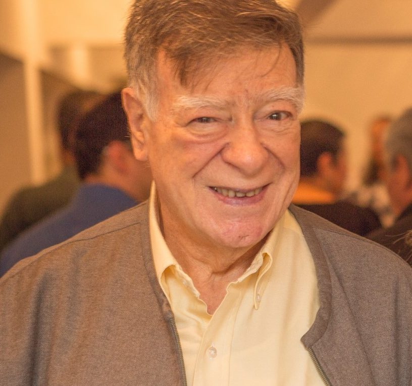
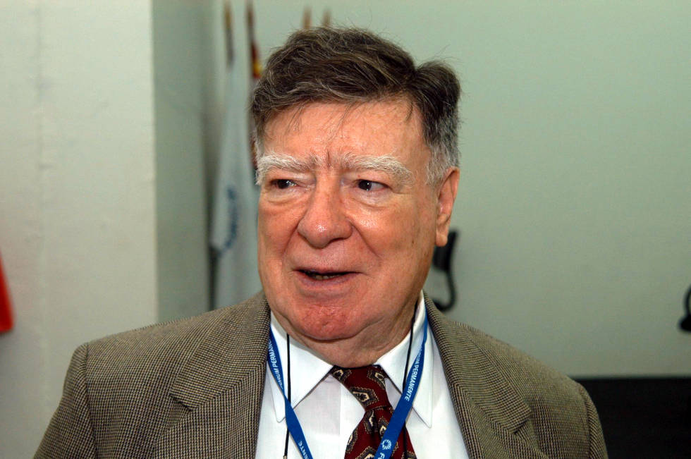

Ubiratan D'Ambrosio
D'Ambrosio foi um homem como qualquer outro, com falhas e limites, mas sua visão revolucionária transformou pra sempre a forma como entendemos a educação e a matemática.
Mais do que ensinar números, Ubiratan D'Ambrosio ensinou o mundo a enxegar a matématica como parte da cultura humana
.png)
Entre Números e Cultura: A Vida de Ubiratan D'Ambrosio
Ubiratan D’Ambrosio foi um homem que enxergou na matemática não apenas números, mas pontes. Nascido em São Paulo, em 1932, dedicou sua vida a transformar o ensino e a maneira como entendemos o conhecimento. Para ele, ensinar matemática era ensinar humanidade — era permitir que cada pessoa reconhecesse sua própria forma de pensar, criar e se expressar.
Professor, pesquisador e escritor, D’Ambrosio ficou conhecido mundialmente por criar o conceito de Etnomatemática, uma ideia revolucionária que mostra como toda cultura tem seu próprio modo de compreender e usar a matemática. Essa visão rompeu fronteiras e inspirou educadores em todo o mundo, tornando-o uma das vozes mais importantes da educação contemporânea.
Mais do que um cientista, ele foi um humanista, que acreditava na educação como caminho para a paz e a solidariedade entre os povos. Em suas palavras e ações, defendia que aprender não é competir, mas compartilhar saberes. Ubiratan D’Ambrosio partiu em 2021, mas deixou um legado que continua vivo em cada sala de aula que valoriza o respeito, a diversidade e o poder transformador do conhecimento.
Reflexões de um Educador

"A Prioridade Absoluta de nossa missão como educadores é alcançar a paz nas gerações futuras"
"Ensinar matemática é ensinar a olhar o mundo com atenção e respeito cultural"

"A educação transforma quando conecta saberes locais e científicos"
Curiosidade
- 🧮 Criou o termo Etnomatemática, mostrando que a matemática existe em todas as culturas.
- 🌎 Foi reconhecido internacionalmente e recebeu prêmios de diversas instituições ao redor do mundo.
- 👨🏫 Começou a dar aulas ainda jovem e dedicou sua vida à educação e à pesquisa.
- 📚 Escreveu mais de 20 livros sobre educação, cultura e o papel da matemática na sociedade.
- 🕊️ Defendia a paz e acreditava que o conhecimento deve promover solidariedade e respeito.
- 🧠 Unia matemática, filosofia e história em suas reflexões sobre o ensino.